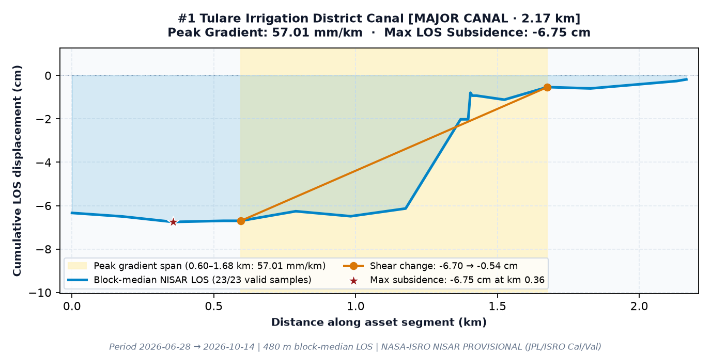
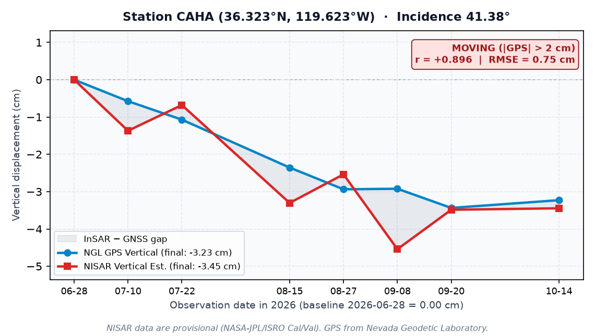

L-Band Radar Images the UK Fens Through Cloud Cover (20 Oct 2026)
While passive optical sensors are obscured under northern European cloud decks, NISAR's 24 cm L-band microwave beam resolves coastlines and peatland drainage on the exact same date.

[−0.3, 52.4, 0.4, 52.9]; ~98% cloud cover). Data: NASA GIBS. Analysis: Team Taykut.
P05023; 100% valid pixels, registered to GIBS). Data: NASA-ISRO NISAR, ASF DAAC. Analysis: Team Taykut.Historical Benchmark, Dual-Pol Crop Signal & Negative-Control Discipline: Drained UK arable fens continue to oxidise at 1–2 cm/yr (UKCEH / Defra WP2), extending the ~4 m cumulative peat lowering measured at Holme Fen since 1851 (site now 2.75 m below sea level). Across 4 Fens crop areas (22 Jun–8 Oct 2026, data/fens/crops.json), NISAR HH sits ~7 dB brighter than HV (4.27 vs. 3.49 dB temporal range), tracking surface soil moisture alongside 3D canopy volume, while in California's Tulare ag core L-band (24.2 cm, 12.1 cm fringe) retains 80.4% summer coherence (cross_sensor.md). Separately, our 9-pair London clay Track 101 GUNW test (21 Jun–19 Oct 2026, data/uk_clay/detection.json) reports status: below_detection: after quadratic atmosphere removal, 97.7% of 1 km blocks stay within ±1.5 cm and 0 interior blocks exceed the 3σ threshold of 3.62 cm, keeping ~1 cm seasonal clay motion from being mislabelled as subsidence.
data/uk/meta.json, data/uk_clay/detection.json)
Slide 2 / 7
Central Valley Subsided Up to 7.8 cm in 108 Days (28 Jun–14 Oct 2026)
Across 108 summer irrigation days (28 Jun–14 Oct 2026), L-band cumulative interferograms map concentrated drawdown bowls intersecting major aqueducts and rail corridors.

mixed −20.3 cm LOS / −16.8 cm/yr perm; Delta −1.3 cm LOS; 79.2% CV >2 cm is cropland). Data: NASA-ISRO NISAR, ASF DAAC. Analysis: Team Taykut.p01 (6 km N of Terra Bella) · 108-day linear rate: −26.4 cm/yr*
data/central_valley/summary.json).
Slide 3 / 7
Comparison Against 10 Continuous GPS Stations and Independent Orbit Track 114
NISAR vertical estimates (LOS / cos θ) match continuous valley GPS stations at sub-centimetre error, and independent ascending/descending passes isolate vertical bowl motion.


GNSS, Dual-Orbit & Vertical Vector Summary
- GNSS Agreement (
validation_report.md,cross_sensor.md): Cross-station final fit r = 0.924 (1.37 cm final RMSE across 10 sites; 1.00 cm median time-series RMSE; 0.76 cm final RMSE across 4 sites moving >2 cm; 0.823 cm RMSE across 5 Tulare ag-core GPS stations where L-band keeps 80.4% valid pixels vs. C-band's 2.77 cm fringe). - Dual-Orbit Cross-Check (
cv_p34_vs_p114.json): Track 34 Asc. ↔ Track 114 Desc. (6,719 1 km blocks, 28 Jun–14 Oct 2026) achieve r = 0.489 (0.60 local <15 km, RMSE 2.65 cm, median diff −1.29 cm, 85% sign agreement where|d| > 3 cm). - Two-Geometry Vertical Vector (
vertical.json): Solving East + Up pixel equations isolates −7.2 cm vertical subsidence at the Alpaugh / Earlimart bowl (only −0.1 cm east-west; max −9.8 cm up). Cramér-Rao phase sigma median: 0.294 cm (uncertainty/meta.json).